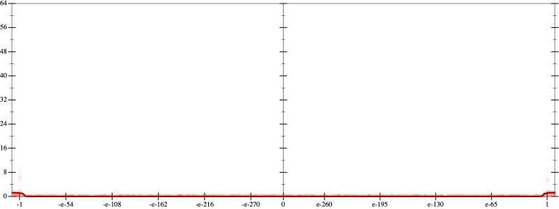
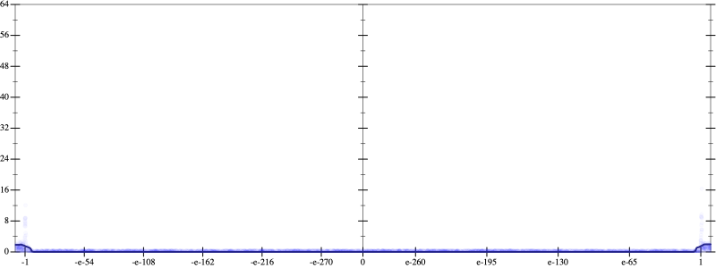
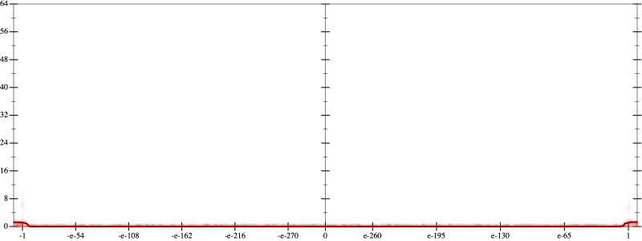
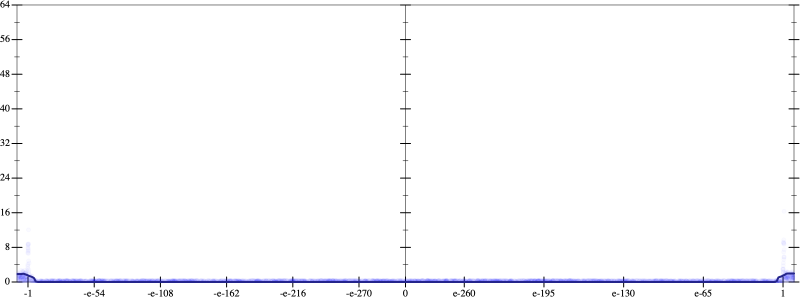

Initial program 0.0
\[\left(\left(\left(\left(\left(665280.0 + -7983360.0 \cdot \left(x \cdot x\right)\right) + 13305600.0 \cdot \left(\left(\left(x \cdot x\right) \cdot x\right) \cdot x\right)\right) + -7096320.0 \cdot \left(\left(\left(\left(\left(x \cdot x\right) \cdot x\right) \cdot x\right) \cdot x\right) \cdot x\right)\right) + 1520640.0 \cdot \left(\left(\left(\left(\left(\left(\left(x \cdot x\right) \cdot x\right) \cdot x\right) \cdot x\right) \cdot x\right) \cdot x\right) \cdot x\right)\right) + -135168.0 \cdot \left(\left(\left(\left(\left(\left(\left(\left(\left(x \cdot x\right) \cdot x\right) \cdot x\right) \cdot x\right) \cdot x\right) \cdot x\right) \cdot x\right) \cdot x\right) \cdot x\right)\right) + 4096.0 \cdot \left(\left(\left(\left(\left(\left(\left(\left(\left(\left(\left(x \cdot x\right) \cdot x\right) \cdot x\right) \cdot x\right) \cdot x\right) \cdot x\right) \cdot x\right) \cdot x\right) \cdot x\right) \cdot x\right) \cdot x\right)\]
Taylor expanded around 0 0.0
\[\leadsto \left(\left(\left(\left(\left(665280.0 + -7983360.0 \cdot \left(x \cdot x\right)\right) + \color{blue}{13305600.0 \cdot {x}^{4}}\right) + -7096320.0 \cdot \left(\left(\left(\left(\left(x \cdot x\right) \cdot x\right) \cdot x\right) \cdot x\right) \cdot x\right)\right) + 1520640.0 \cdot \left(\left(\left(\left(\left(\left(\left(x \cdot x\right) \cdot x\right) \cdot x\right) \cdot x\right) \cdot x\right) \cdot x\right) \cdot x\right)\right) + -135168.0 \cdot \left(\left(\left(\left(\left(\left(\left(\left(\left(x \cdot x\right) \cdot x\right) \cdot x\right) \cdot x\right) \cdot x\right) \cdot x\right) \cdot x\right) \cdot x\right) \cdot x\right)\right) + 4096.0 \cdot \left(\left(\left(\left(\left(\left(\left(\left(\left(\left(\left(x \cdot x\right) \cdot x\right) \cdot x\right) \cdot x\right) \cdot x\right) \cdot x\right) \cdot x\right) \cdot x\right) \cdot x\right) \cdot x\right) \cdot x\right)\]
Applied simplify0.1
\[\leadsto \color{blue}{\left({\left(x \cdot x\right)}^{3} \cdot \left(\left(x \cdot x\right) \cdot \left(x \cdot x\right)\right)\right) \cdot \left(-135168.0 + x \cdot \left(4096.0 \cdot x\right)\right) + \left({\left(x \cdot x\right)}^{3} \cdot \left(1520640.0 \cdot \left(x \cdot x\right) + -7096320.0\right) + \left(665280.0 + \left({x}^{4} \cdot 13305600.0 + \left(x \cdot x\right) \cdot -7983360.0\right)\right)\right)}\]
- Using strategy
rm Applied add-exp-log0.1
\[\leadsto \left({\left(x \cdot x\right)}^{3} \cdot \left(\left(x \cdot x\right) \cdot \left(x \cdot x\right)\right)\right) \cdot \left(-135168.0 + x \cdot \left(4096.0 \cdot x\right)\right) + \left({\left(x \cdot x\right)}^{3} \cdot \left(1520640.0 \cdot \left(x \cdot x\right) + -7096320.0\right) + \left(665280.0 + \left(\color{blue}{e^{\log \left({x}^{4} \cdot 13305600.0\right)}} + \left(x \cdot x\right) \cdot -7983360.0\right)\right)\right)\]
 
